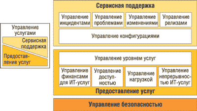

По материалам корпорации IBM (http://www.ibm.com/ru).
Важность информационных технологий для бизнеса стремительно возрастает. Одновременно растет и скорость изменений в бизнесе в целом, происходят слияния компаний, поглощения, реструктуризация и т. п. Все эти процессы требуют поддержки, ресурсов внутри компании, внутри основного бизнеса - того, за счет чего можно добиться определенных стратегических преимуществ на рынке. В результате сегодня именно ИТ как крупный сегмент, требующий значительных инвестиций, внимательно рассматриваются в качестве ресурса, из которого можно извлечь определенные преимущества для бизнеса. В этих условиях задача эффективного управления самой информационной инфраструктурой выходит на передний план.
Tivoli - это одна из пяти торговых марок связующего ПО, выпускаемого IBM Software Group, а также название подразделения, которое занимается разработкой решений для управления инфраструктурой бизнеса по требованию. С точки зрения IBM, именно это ПО отвечает за решение ключевых задач связывания бизнес-процессов с ИТ-инфраструктурой, сокращения времени и затрат, прогнозирования проблем и разрешения их прежде, чем они проявятся, а также за повышение производительности предприятия за счет расстановки квалифицированных кадровых ресурсов на стратегические, приносящие максимальную экономическую отдачу позиции (см. рис. 1 и таблицу). Важно и то, что Tivoli дает заказчикам возможность управлять воздействием ИТ-операций на бизнес.
| Рис. 1. Интегрированное, автоматизированное и оптимизированное ПО Tivoli - сердце информационной инфраструктуры бизнеса по требованию.
|
Основные решения IBM Tivoli для управления ИТ-инфраструктурой
| Назначение | Краткое описание | Состав решений |
| Комплексное управление приложениями | Помогают быстро изолировать, обнаружить и устранить критические для ведения бизнеса проблемы с производительностью транзакций. Возможности упреждающего мониторинга крупномасштабных систем и своевременного устранения узких мест очень важны для бизнеса по требованию. Пользователи могут визуально проследить ход выполнения всей транзакции, от ее начала до завершения, что позволяет быстро локализовать источник проблем. Затем при помощи функций глубинной диагностики, работающих в режиме реального времени, можно выявить первопричину проблемы. Диагностика на уровне методов позволяет передавать архитектору или разработчику конкретные ошибки, выявленные в программном коде, для их оперативного исправления |
|
| Повышение производительности и доступности | Предоставляют основу для управления инфраструктурой электронного бизнеса, непрерывно анализируя информацию о приложениях, оборудовании и сетевых устройствах и во многих случаях устраняя проблемы на начальных стадиях. Обеспечивают контроль систем электронного бизнеса на уровне компонентов, бизнес-систем и предприятия в целом. Технология обнаруживает как серьезные проблемы, так и обманчивые симптомы, и либо уведомляет обслуживающий персонал, либо автоматически устраняет проблемы |
|
| Управление бизнес-сервисами | Помогают понять, как производительность и готовность ИТ-ресурсов влияет на приложения, процессы и службы, поддерживающие бизнес. Эти решения позволяют присвоить максимальные приоритеты в ИТ-системе процессам, которые имеют наивысшее значение для бизнеса, а не наиболее проблемным составляющим. Так, IBM Tivoli Business Systems Manager повышает качество управления готовностью, позволяя ИТ-службам отвечать непосредственно за обслуживание заказчиков, а не только за технологии как таковые. В случае сбоя или простоя процессы, обеспечивающие получение дохода, получают приоритет перед внутренними процессами |
|
| Координирование и развертывание | Многие компании обеспечивают выполнение жестких соглашений об уровне сервиса, закупая избыточные ИТ-ресурсы с расчетом на пиковые уровни нагрузки. Однако если применять такой подход к каждому приложению в отдельности, выделяя для каждого бизнес-процесса специальный сервер, получается негибкая, дорогая в обслуживании и недозагруженная среда. Продукты Tivoli позволяют оптимизировать решение подобных задач |
|
| Обеспечение безопасности | Направлены на решение двух ключевых задач электронного бизнеса: автоматизированного управления учетными записями и управления событиями в сфере безопасности. Решение IBM Tivoli для управления учетными записями быстро окупает вложенные средства, позволяя легко включать в работу пользователей, системы и приложения и эффективно управлять учетными записями, правами доступа и требованиями конфиденциальности на протяжении жизненного цикла учетной записи. Решение IBM Tivoli для управления событиями в сфере безопасности позволяет отслеживать события в сфере ИТ-безопасности электронного бизнеса, сопоставлять их и оперативно принимать ответные меры |
|
| Хранение и оптимизация данных | Позволяют получить целостное представление о средствах хранения данных по всему предприятию и о том, какое влияние оказывают на них другие действия по управлению ИТ-инфраструктурой. Тем самым помогают проводить мониторинг, настройку и администрирование ресурсов хранения данных и информационных процессов в соответствии с постоянно меняющимися потребностями бизнеса. Дают возможность автоматизировать и интегрировать задачи в рамках отдельно взятых процессов и групп выбранных процессов, связанных с управлением средствами хранения данных, включая процессы из библиотеки ITIL и процессы собственной разработки |
|
Ключевые преимущества Tivoli связаны со следующими его характеристиками:
- масштабируемость - лежащая в основе продуктов сеть объектов обеспечивает работу с сотнями тысяч объектов, управляемых с помощью одного логического представления;
- открытость - техническое сотрудничество с другими поставщиками для согласования интерфейсов управления;
- возможность использовать широкий диапазон альтернативных инструментов, встраиваемых в стратегическую платформу;
- кросс-платформенность систем - сеть объектов скрывает различия между разными типами, объединяя их в едином логическом представлении.
Благодаря открытой архитектуре Tivoli решения от независимых разработчиков могут полностью интегрироваться в общую среду управления, образуя цельную систему управления технологическими ресурсами. В состав платформы управления Tivoli входит несколько десятков тесно интегрированных между собой модулей.
Соответствие методологии ITIL
Повышение эффективности применения ИТ и управления ИТ-инфраструктурой требует не просто некоторого ПО для автоматизации этих процессов, а соответствующей методологической базы. В настоящее время общепризнанным стандартом такого подхода служит применение библиотеки Information Technology Infrastructure Library (ITIL)*. Основываясь на методологии производственных процессов, применяемой ИТ-отделами во всем мире, для организаций библиотека ITIL служит руководством по наиболее эффективному и продуктивному использованию современных технологий. Коллекция оптимальных методик из состава библиотеки ITIL позволяет сопоставить технологические услуги с потребностями бизнеса, одновременно помогая добиться отдачи от инвестиций в технологии.
*О библиотеке ITIL см. также статью "Решения ITSM в России", "BYTE/Россия" No 8'2005.
Процессы управления услугами описываются в двух разделах ITIL: "Сервисная поддержка" и "Предоставление услуг" (рис. 2). В разделе сервисной поддержки определены методы обеспечения доставки услуг путем поддержки пользователей и контроля в рамках инфраструктуры над изменениями и релизами. В разделе предоставления услуг описывается доставка ИТ-услуг ИТ-заказчикам в соответствии с оговоренным уровнем обслуживания.
|  | Рис. 2. Основные процессы ИТ-услуг, определяемые библиотекой ITIL.
|
Имеется также дополнительный процесс управления безопасностью в сфере ИТ, описывающий инструменты контроля информационной безопасности. Библиотека ITIL раскрывает и многие другие аспекты жизнедеятельности и поддержки ИТ-структуры, такие, как функционирование и управление приложениями и безопасностью. Процессы управления услугами создают для компании основу, позволяющую ей определить необходимые уровни обслуживания в соответствии с корпоративными потребностями, составом технологий и бюджетными параметрами. С помощью библиотеки ITIL организации могут внедрять процессы последовательно, руководствуясь стратегией непрерывного улучшения. В то же время масштабируемый и простой в установке инструментарий помогает лучше управлять текущими процессами, закладывая фундамент для будущего расширения бизнеса.
Общий подход к управлению ИТ заметно эволюционировал в течение последних лет. Так, если раньше организации фокусировались в основном на управлении фактическими системами и ресурсами, то с течением времени они значительно сместили акцент в сторону управления ИТ-услугами. Основная концепция ITIL состоит как раз в том, чтобы обеспечить последовательный переход компаний от управления системами к управлению услугами (рис. 3).
| Рис. 3. Эволюция ИТ-процессов.
|
Продукты Tivoli с поддержкой ITIL-процессов управления услугами помогают перейти к организации управления услугами (рис. 4). Тут нужно отметить, что, как правило, нет жесткой связи конкретного программного решения с тем или иным процессом, часто один продукт решает набор задач из разных процессов. Ниже мы рассмотрим возможность использования ПО Tivoli для автоматизации основных ITIL-процессов.
| Рис. 4. Некоторые из программных продуктов Tivoli, поддерживающие ITIL-процесс управления услугами.
|
Продукты Tivoli и задачи сервисной поддержки
Как было сказано выше, в ITIL выделяются пять основных процессов сервисной поддержки: управление инцидентами, управление проблемами, управление изменениями, управление релизами и управление конфигурациями.
Управление инцидентами
Будучи неотъемлемой частью сервисной поддержки, управление инцидентами заключается в оперативной обработке инцидентов, зарегистрированных диспетчерской службой, - включая неисправности, простои и запросы на обслуживание. Автоматизация процесса управления инцидентами подразумевает регистрацию и отслеживание инцидентов, мониторинг состояния системных ресурсов, обработку стандартных запросов на обслуживание, а также управление базами знаний. Для решения этих задач могут применяться описанные ниже продукты Tivoli.
Tivoli Web Access for Information Management - расширение IBM Tivoli Information Management для платформы z/OS, предоставляющее набор готовых услуг по управлению инцидентами, включая обработку и отслеживание инцидентов или запросов на обслуживание.
Tivoli OMEGAMON XE - помогает отследить причины снижения производительности.
Tivoli Remote Control - быстрые, безопасные и надежные средства удаленного контроля за критическими ресурсами для разрешения инцидента сотрудниками диспетчерской службы.
Tivoli Monitoring - идентифицирует эксплуатационные события, ставшие причиной инцидентов диспетчерских служб.
Tivoli Enterprise Console - централизованный контрольный пункт для слежения и реагирования как на события в масштабе всего предприятия, так и на текущие конфликты в рамках ответственности диспетчерской службы.
Tivoli Provisioning Manager - автоматизирует ручную поддержку систем и обеспечивает быструю обработку запросов на обслуживание.
Управление проблемами
В отличие от процесса управления инцидентами, ориентированного на решение краткосрочных задач, управление проблемами заключается в анализе накопленных данных с целью определения тенденций, анализа первопричин и выявления долгосрочных способов исправления ошибок в организации ИТ-инфраструктуры. Поддержка автоматизации управления проблемами включает анализ накопленных данных, регистрацию проблем, их отслеживание и диагностику. Вот примеры продуктов Tivoli, обеспечивающих поддержку управления проблемами.
Tivoli Web Access for Information Management - предоставляет набор готовых услуг по управлению проблемами, включая обработку и отслеживание проблем.
Tivoli Analyzer for Lotus Domino - предупреждает о серверных проблемах, определяет источник происхождения проблем и дает рекомендации по их разрешению.
Tivoli Switch Analyzer - помогает определить, является ли неисправность сети первопричиной проблемы.
Tivoli Web Site Analyzer - собирает, анализирует, хранит данные и генерирует отчеты об использовании Web-сайта, его исправности, целостности и содержании при проблемах, связанных с Интернетом.
Tivoli Data Warehouse - система накопления данных, необходимых для анализа первопричин проблем.
Управление изменениями
В задачи процесса управления изменениями входят проверка и утверждение запросов на изменение, а также координация и развертывание утвержденных изменений. Предлагаемые инструменты управления изменениями позволяют отслеживать утверждение изменений и анализировать последствия этих изменений.
Tivoli Web Access for Information Management - предоставляет услуги по управлению изменениями, включая утверждение запросов на изменения и их отслеживание.
Tivoli Configuration Manager - позволяет администратору составить расписание дистрибуции программных решений в масштабе предприятия.
Управление релизами
Управление релизами - это процесс подготовки, тестирования и развертывания инфраструктурных изменений, называемых "релизами". Ниже даны примеры продуктов Tivoli, обеспечивающих поддержку управления релизами.
Tivoli Provisioning Manager - автоматизирует ручную поддержку систем и развертывание релизов.
Tivoli Configuration Manager - помогает развернуть ПО и отслеживает конфигурации аппаратного и программного обеспечения.
Управление конфигурациями
Управление конфигурациями позволяет контролировать информацию об аппаратном и программном обеспечении и сопутствующей документации ИТ-инфраструктуры (называемых "учетными элементами"), а также о взаимосвязях между этими учетными элементами. Семейство Tivoli включает следующие продукты для выполнения таких задач.
Tivoli Configuration Manager - имеет расширенные возможности инвентаризации и предоставления отчетности для отслеживания входящего в ИТ-инфраструктуру ПО.
Tivoli License Manager - использует расширенные возможности инвентаризации и предоставления отчетности для отслеживания и определения объема лицензий на ПО ИТ-инфраструктуры.
Продукты Tivoli для поддержки предоставления услуг
Предоставление услуг - это область управления ИТ-услугами, специализирующаяся на доставке ИТ-услуг заказчикам в соответствии с оговоренным уровнем обслуживания. В нее включают: управление доступностью, управление мощностями, управление уровнями обслуживания, управление непрерывностью предоставления ИТ-услуг и управление финансами в сфере ИТ.
Управление доступностью
Управление доступностью подразумевает выяснение требований заказчика к уровню доступности услуг, оценку мощности ИТ-инфраструктуры для обеспечения этих уровней доступности и выполнение определенных действий для того, чтобы повысить уровень доступности услуг. В Tivoli для этого имеются следующие решения.
Tivoli Analyzer for Lotus Domino - предупреждает о проблемах с доступностью серверов, определяет источник неисправностей и дает рекомендации по их устранению.
Tivoli Business Systems Manager - управляет группами соответствующих приложений, отвечающих за предоставление критических бизнес-услуг, например, системой планирования ресурсов (ERP), системой управления взаимосвязями с клиентами и партнерами (CRM) или бизнес-приложениями "по требованию". Позволяет просматривать доступность компонентов. Обеспечивает поддержку IBM Tivoli Business Systems Manager for z/OS.
Tivoli Monitoring - предназначен для мониторинга индивидуальных компонентов услуг. Имеются следующие варианты этого продукта: for Applications, for Business Integration, for Databases, for Messaging and Collaboration, for Microsoft .NET, for Transaction Performance, for Virtual Servers, for Web Infrastructure.
Tivoli NetView - проактивный мониторинг доступности сетевых ресурсов; обеспечивает поддержку IBM Tivoli NetView for z/OS.
Tivoli Storage Area Network Manager - мониторинг доступности компонентов связной архитектуры сети хранения данных (SAN).
Tivoli Enterprise Console - коррелирует и сортирует системные и сетевые события для простой идентификации доступности ресурсов.
Управление мощностями
Управление мощностями - это проактивная проверка наличия у ИТ-инфраструктуры мощностей, достаточных для эффективной работы. Эту задачу решают следующие продукты.
Tivoli Intelligent Orchestrator - распознает повышение требований ресурсов и автоматически перенаправляет ресурсы в нужном направлении.
Tivoli Monitoring for Network Performance - позволяет модулям z/OS отслеживать, как протокол TCP/IP воздействует на подконтрольные критические системы и работу приложения.
Tivoli Performance Modeler for z/OS - моделирует показатели мощности и производительности для индивидуального объема работы или нескольких системных объемов работы.
Tivoli Storage Resource Manager - идентифицирует дисковые устройства хранения данных в масштабе мероприятия, отслеживает потребление дискового пространства, генерирует подробные отчеты и автоматически выполняет определенные действия.
Tivoli OMEGAMON XE - позволяет в режиме реального времени просмотреть данные о системных ресурсах, необходимые для мониторинга мощностей компонентов.
Tivoli Workload Scheduler - автоматизирует, отслеживает и контролирует объемы работ ИТ-инфраструктуры с помощью локальной и удаленной систем (имеются варианты for Applications и for z/OS).
Управление уровнями обслуживания
Управление уровнями обслуживания заключается в ведении и отслеживании соглашений об уровнях обслуживания (SLA), и для этого предлагаются нижеследующие решения.
Tivoli Service Level Advisor - автоматически анализирует соглашения об уровнях обслуживания и рассчитывает их соответствие действительности, одновременно проводя анализ с тем, чтобы избежать нарушений уровня обслуживания.
Tivoli Intelligent Orchestrator - отслеживает уровни обслуживания и выполняет определенные действия, чтобы обеспечить соответствие новых системных ресурсов предъявленным требованиям.
Управление непрерывностью предоставления ИТ-услуг
Управление непрерывностью предоставления ИТ-услуг - это процесс планирования восстановления системы после основных сбоев ИТ-услуг. Оно во многом связано с задачами поддержки надежного хранения данных, и здесь используются такие средства.
Tivoli Storage Manager - автоматизирует функции резервного копирования и восстановления данных, поддерживает широкий диапазон платформ и накопителей данных, централизует функции управления системами хранения данных. Варианты продукта - Extended Edition, for Application Servers, for Databases, for ERP, for Hardware, for Mail.
Tivoli Storage Resource Manager - управляет мощностями ресурсов резервного копирования данных и хранения информации.
Управление финансами в сфере ИТ
Управление финансами в сфере ИТ охватывает управление ИТ-активами и ресурсами. Ниже даны примеры продуктов Tivoli, поддерживающих финансовое управление в сфере ИТ.
Tivoli License Manager - использует расширенные возможности инвентаризации и предоставления отчетности для отслеживания и определения объема лицензий на ПО в ИТ-инфраструктуре.
Tivoli Storage Resource Manager - идентифицирует устройства хранения данных в масштабе предприятия, отслеживает потребление дискового пространства, генерирует подробные отчеты, автоматически выполняет определенные действия и обеспечивает начисление платы пользователям.
Решения для управления безопасностью
Современный онлайн-бизнес меняет сам подход ИТ-организаций к вопросам безопасности. В действительности контроль и управление безопасностью могут стать главной задачей ИТ-менеджеров, необходимой для функционирования их онлайн-бизнеса. Именно для этой цели интегрированное семейство продуктов Tivoli предоставляет полный набор масштабируемых решений, предназначенных для централизации управления безопасностью и контроля доступа.
Tivoli Access Manager for e-business - обеспечивает безопасность онлайн-бизнеса, включая систему разовой Web-аутентификации (SSO), распределенное Web-ориентированное администрирование и безопасность на основе политик.
Tivoli Access Manager for Business Integration - обеспечивает среде IBM WebSphere MQ возможности контроля доступа, защиты данных на уровне приложения и централизованных политик безопасности.
Tivoli Access Manager for Operating Systems - защищает индивидуальные приложения и ресурсы ОС, обрабатывая системные уязвимости профиля суперпользователя и корневого доступа ОС Unix и Linux.
Tivoli Identity Manager - централизованно координирует создание пользовательских профилей, обрабатывает задания на автоматизацию процессов утверждения и предоставления ресурсов.
Tivoli Privacy Manager for e-business - помогает повысить уровень доверия пользователя и целостность имиджа брэнда путем внедрения политик безопасности, контролирующих доступ к личной информации пользователей.
Tivoli Risk Manager - упрощает работу с событиями и сигналами, генерируемыми множеством ключевых продуктов, путем объединения их в общей консоли, помогающей определить серьезность атак.
Tivoli Security Compliance Manager - идентифицирует уязвимости системы безопасности и нарушения политики безопасности.
ITIL и конкретные подходы к автоматизации управления
Хотя библиотека ITIL и остается крайне полезным ресурсом, помогающим организациям создать базу ИТ-инфраструктуры, это все же не пошаговый процесс комплексного внедрения тех или иных программных средств. В качестве высокоуровневого руководства ITIL предлагает лишь отправную точку, с которой организации могут начать определять низкоуровневые потоки работ и обязанности участников процессов ITIL. Не существует формальных стандартов определения соответствия программных инструментов требованиям ITIL. Поэтому поставщики, предоставляющие свои собственные определения такого соответствия, предлагают услуги по измерению соответствия ITIL (в основном в области сервисной поддержки).
Компания IBM предоставляла клиентам свои программные и аппаратные технологии еще за десятилетия до рождения ITIL и сейчас продолжает адаптировать продукты управления ИТ-услугами к потребностям структуры ITIL. В настоящее время IBM Global Services предоставляет клиентам стратегические аутсорсинговые услуги, задействуя сотрудников, сертифицированных по программе ITIL, а также проводит обучающие курсы и сертификацию ведущего персонала по многим дисциплинам. Клиентам, внедряющим ITIL в своих ИТ-организациях, IBM Global Services и Tivoli Services предлагают услуги оценки и адаптации, проводят обучающие курсы. В дополнение к этому IBM предлагает описанные ниже решения поддержки ITIL.
Infrastructure Resource Management Accelerator - шаблонные инструменты внедрения ITIL-процессов сервисной поддержки и предоставления услуг, помогающие ускорить ввод их в эксплуатацию и появление отдачи. Пакет IBM Infrastructure Resource Management Accelerator использует определения процесса ITIL и рекомендации диспетчерских служб сторонних компаний.
IBM Accelerator for Availability Management - версия начального уровня методологии управления событиями и проектирования мониторинга, объединяющей лучшие методы библиотеки ITIL и патентованной методологии IBM. Это предложение расширяет преимущества Tivoli Monitoring и Tivoli Enterprise Console за счет поддержки ITIL-оценки существующих процессов управления доступностью, рекомендуя улучшения и внедряя оптимальные методы.
При помощи Tivoli Services и программы Customer Success предприятие может получить дополнительные преимущества от следующих ITIL-ориентированных услуг.
Tivoli Assessment Program - проводит оценку ИТ-организации для определения ее готовности и оптимальных методов адаптации к ITIL-процессам.
Tivoli SmartStart Program - оценка текущей ИТ-инфраструктуры заказчика и предоставление рекомендаций по организации будущих операций и инфраструктуры. ITIL-процессы задействуются в процессе оценки в качестве модели для исследования процессов и процедур, используемых при будущем развертывании, эксплуатации, обслуживании и работе решений Tivoli.
Tivoli QuickStart Services - обеспечивает простоту развертывания и минимальное время окупаемости решений Tivoli, помогая быстро и эффективно использовать технологии ПО Tivoli. Этот выверенный пошаговый процесс планирования, обучения и внедрения позволяет заказчикам оптимизировать установленное решение и эффективно подготовиться к широкомасштабному производству.
В завершение нужно сказать о том, что IBM в последние годы уделяет особое внимание услугам и решениям, специально разработанным для компаний среднего и малого бизнеса. Речь идет в первую очередь о портфеле продуктов серии Express. Они предназначены для построения комплексных технологических решений, которые можно приобретать, устанавливать и администрировать быстро, экономически эффективно и с кратчайшими сроками окупаемости. Учитывая, что недостаток денежных средств - одна из самых острых проблем для компаний среднего размера, в рамках портфеля IBM Express также предлагается ряд привлекательных вариантов финансирования.
Отвечая на новые потребности компаний, IBM недавно также представила четыре новых решения для управления ИТ-инфраструктурой.
IBM Network Operations and Management Services. В рамках этой услуги специалисты IBM могут дистанционно контролировать работу сети клиента семь дней в неделю, двадцать четыре часа в сутки. Решение отслеживает работу сети, состояние систем и неполадки с компонентами, устанавливает жизненно необходимые для работы инфраструктуры бизнеса обновления ПО и микропрограмм. Клиенты могут также получать отчеты о работе и состоянии сети - как ежемесячно, так и в реальном времени. Для быстрого выявления причин неполадок администратор клиента может в реальном времени получить информацию о работе сети на специальном защищенном Интернет-портале.
IBM Infrastructure Recovery Services. Услуга, помогающая компаниям среднего размера сделать первый шаг к построению всеобъемлющего плана восстановления бизнеса в случае непредвиденных сбоев. Она предусматривает двухдневный консалтинговый семинар, в рамках которого специалисты IBM и компании-клиента совместно разрабатывают адаптированный к потребностям клиента план восстановления, используя методики IBM. Кроме того, клиенты имеют возможность провести тренировку по восстановлению данных.
IBM Desktop Management Services. Эта услуга, разработанная специалистами IBM Research специально для клиентов из сферы малого и среднего бизнеса, помогает бороться с сетевыми вторжениями. Данное предложение, в котором используется более 40 технологий, предоставляет экономически доступное решение проблемы, которая стоит перед ИТ-службами многих малых и средних компаний. В него включено автоматическое управление парком компьютеров, резервное копирование и восстановление данных, мониторинг локальной сети, автоматическая загрузка ПО и образов ПО, а также виртуальная справочная служба с автоматическим сбросом паролей для ПК и решением других проблем пользователей первого уровня.
IBM High Availability Express Portfolio Solution for iSeries. Новое предложение, предоставляющее компаниям среднего размера решение корпоративного класса для обеспечения круглосуточной готовности ИТ-систем бизнеса. В основе решения лежат возможности сервера IBM eServer iSeries HA810 и ранее выпускавшихся систем AS/400.